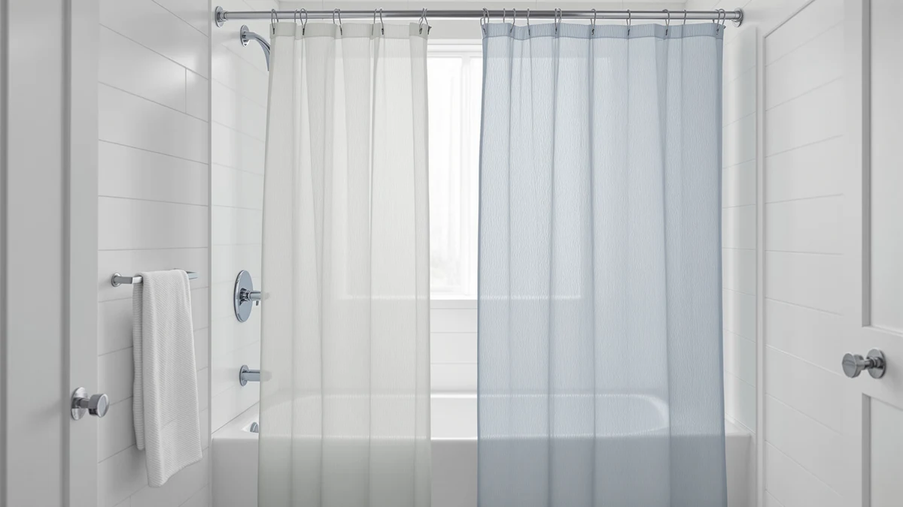

Things to Know Before You Buy
- The price gap is roughly 20x: a quality fabric curtain runs $10 to $30, while a fixed glass screen costs $200 to $900 with professional installation.
- Renters need landlord approval for screens: installation drills into tile or the tub lip, so a curtain is the default choice in a rental.
- Screens suit walk-in showers, curtains suit tubs: a half-panel screen leaves a gap that splashes in a tub-shower combo unless the showerhead points away from the opening.
- Cleaning workloads differ: a fabric curtain goes through the washing machine monthly, while glass needs a squeegee pass after each shower to avoid hard-water film.
- Weights and liners fix most curtain complaints: billowing, cling, and floor puddles almost always trace back to a missing liner or an unweighted hem, and both cost under $15 to solve.
Choosing between a shower curtain vs screen comes down to budget, cleaning habits, bathroom layout, and how long you plan to stay in your home. A curtain costs $10 to $40 for a full setup and hangs in five minutes. A glass screen costs $200 to $900 installed and stays put for a decade. Both keep water off the floor when you size them for the fixture, and both leak in predictable ways when you cut corners.
We publish shower curtain guides year-round on this site, and this question lands in our inbox more than any other renovation dilemma. Our answer rarely changes: renters and tub owners get the better deal from a quality fabric curtain, while homeowners with walk-in showers and a five-year horizon get more from a fixed glass panel.
This guide covers the price gap, the cleaning workload, the space each option demands, and the mistakes that flood floors with either one. You will also find our three current curtain picks near the end, because an upgrade under $30 fixes most of the complaints that send shoppers to the glass showroom in the first place.
What You Need to Know
The shower curtain vs screen question splits into two products solving the same problem: keeping water inside the shower zone. A curtain is a hanging sheet of fabric or plastic that slides on a rod. A screen is a rigid panel, glass in nearly all cases, fixed to the wall or hinged to swing. The curtain wins on price and flexibility, and it is the only option most landlords will allow. The screen wins on looks and lifespan, and it carries more weight at resale.
Cost drives most decisions here. A fabric curtain like the Biscaynebay we recommend costs under $10, and a full setup with liner, hooks, and weights stays under $40. A fixed glass panel starts around $200 for the glass alone, and professional installation adds another $150 to $400. Frameless designs with thicker glass push past $900.
Permanence matters as much as price. You can swap a curtain in five minutes to match new towels or cover a stain. A screen bolts into tile, so removing one leaves drill holes and a silicone scar. For renters, that is a hard stop unless the landlord pays. Homeowners can count it as a plus, since buyers walking through an open house read glass as a finished bathroom and a curtain rod as a project.
Types and Categories
Curtains sort by material. Polyester fabric leads the category: it repels water and dries fast, and it goes straight in the washing machine; our fabric shower curtain guide covers the top options. PEVA and EVA plastic curtains cost less and skip the liner, though they crinkle and age faster. Cotton and waffle-weave curtains look the best and weigh the most, and they demand a liner because the fabric soaks through.
Screens sort by how they move. A fixed panel covers half to two-thirds of the opening and stays put, which keeps the hardware simple and the price down. Hinged screens swing open like a door and seal better, at the cost of clearance space in front of the shower. Folding screens collapse against the wall for tight bathrooms, and sliding screens run on tracks that suit wide alcoves but collect soap scum faster than any other part.
In the curtain vs screen comparison, bath screens deserve their own mention. These hinged half-panels mount on the tub lip and bring glass looks to tub-shower combos for $100 to $300. They split the difference between the two categories, though water escapes around the open end if your showerhead points toward it.
How to Choose
Start with your lease. If you rent, that settles the shower curtain vs screen question, because a screen installation drills into tile and few landlords approve it. Put the money into the best curtain setup instead: a fabric curtain, a separate liner, metal rollerball hooks, and hem weights. The whole kit costs less than a single pane of glass.
Next, match the fixture. Tub-shower combos favor curtains, since a rod spans the full five feet and blocks spray from any angle. Walk-in showers favor screens, because a single fixed panel covers the splash zone and leaves the entry open. If you want fabric on a walk-in anyway, our walk-in shower curtain guide lists the sizes that work.
Then measure the floor. A hinged screen needs 24 to 30 inches of clear swing space in front of the shower, which many small bathrooms cannot spare. A folding screen or a curtain takes zero clearance. Check your door swing and vanity position before you fall for a showroom photo.
Run the ten-year math before you decide on looks alone. A $15 curtain replaced every 18 months adds up to about $100 over a decade. A $600 installed screen works out to $60 a year across the same period, then keeps serving past it. Moving within three years? The curtain wins. Staying past five in a home you own? The screen closes the gap and adds resale polish.
Households with toddlers or older adults should also weigh the glass itself. Tempered panels hold up when a professional installs them to code, but a curtain removes the question and costs nothing to child-proof.
Common Mistakes to Avoid
Skipping the liner and weights causes more curtain complaints than any other mistake. A bare fabric curtain billows inward, clings to your legs, and lets water wick onto the floor. A $10 liner plus clip-on weights ends all three problems; our weighted shower curtain guide shows the built-in option if you would rather buy once.
Sizing errors come second. Standard curtains measure 72 by 72 inches, and rod height varies from bathroom to bathroom. Mount the rod so the hem floats one to two inches above the tub rim. A dragging hem grows mildew, and a hem that stops six inches short sprays the floor at the corners.
On the screen side of the curtain or screen decision, the classic error is fitting a half-width fixed panel to a tub combo. The open end sits right where most showerheads point, and the floor pays for it. Bath screens work on tubs only when the spray points at the wall or the panel hinges out to extend coverage.
Two more to avoid: buying the cheapest frameless screen, since thin 5 mm glass flexes and the seals fail early, and drilling into tile without checking for pipes behind the wall. A stud finder with pipe detection costs $30 and beats a plumber's emergency rate.
Care and Maintenance
A curtain asks for one habit: a monthly trip through the washing machine. Wash fabric curtains warm with two towels to scrub the folds, skip the dryer, and rehang them wet so gravity pulls out the wrinkles. Our step-by-step cleaning guide covers PEVA liners too, which wipe down rather than wash. Swap the liner every six to twelve months, once pink film stops rinsing out.
A screen asks for a different habit: a squeegee pass after each shower, thirty seconds that prevents the hard-water film glass is known for. Once a week, wipe the panel with a half-and-half mix of white vinegar and water. Check the silicone seals along the wall and floor once a year, and re-caulk when black spots appear, because mold roots into silicone and no spray pulls it back out.
Whichever way you go on shower curtain vs screen, the bathroom fan does more than any cleaner. Run it during the shower and for twenty minutes after, and both fabric and silicone stay mold-free far longer. Our mildew prevention guide goes deeper on humidity control.
Our Top Picks
If you land on the curtain side, start with these three. Each one solves a specific complaint that sends shoppers toward glass: thin see-through fabric, a hem that drifts into your shins, and the wear that comes from washing a single curtain for years.

Editor’s Pick
Biscaynebay Hotel Quality Fabric Shower
Hotel-style water-repellent fabric that hangs straight without a separate liner and comes out of the washing machine clean, for less than most liners cost on their own.
$7.42
Check Price on Amazon
Best Value
8 Pack Shower Curtain Weights
Eight clip-on weights that stop billow and cling in seconds, the cheapest fix for the most common curtain complaint.
$9.99
Check Price on Amazon
Premium Choice
EMLTHORY 3 Sets Shower Curtain
A multi-set pack that outfits a second bathroom or keeps a fresh swap ready while the first set runs through the wash.
$5.99
Check Price on AmazonFrequently Asked Questions
A screen suits walk-in showers in homes you own, since it looks built-in and lasts a decade or more. A curtain suits rentals, tub-shower combos, and budgets under $200. Neither beats the other outright; the fixture and your lease decide it.
Expect $200 to $900 for a glass screen with professional installation, against $10 to $40 for a complete curtain setup with liner, hooks, and weights. Over ten years the gap narrows, because curtains need replacement every one to two years while glass keeps going.
Yes. Hinged bath screens mount on the tub lip and run $100 to $300. They work when your showerhead sprays toward the wall, but the open end leaks onto the floor if the spray points at it, which is why curtains remain the default on tub combos.
A thin vinyl curtain does. A weighted fabric curtain in a neutral color, hung from a ceiling-height rod with rollerball hooks, reads as a hotel bathroom rather than a budget one. The Biscaynebay fabric curtain we recommend costs under $8 and makes that upgrade.
The curtain, on balance. Fabric goes through the washing machine monthly and comes out clean. Glass itself resists mold, but the silicone seals around a screen collect it, and once mold roots into silicone the only fix is cutting the caulk out and resealing.
Verdict
Our verdict on shower curtain vs screen: if you rent, own a tub combo, or just want a change for under $50, choose the curtain. If you own a walk-in shower and plan to stay five years or more, choose a fixed glass panel and pay for professional installation. The curtain path costs a tenth as much and takes one afternoon. Start with the Biscaynebay hotel-quality fabric curtain, add the YixangDD clip-on weights if the hem drifts, and you have removed the billowing and see-through complaints that push most shoppers toward glass. The screen path rewards patience with a decade of service and a bathroom that photographs well at resale, provided you squeegee the panel and watch the silicone seals. Still weighing a single panel against full enclosure glass? Our shower curtain vs glass door comparison walks through the sliding and pivoting options next.